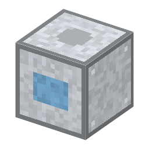

説明
①子ども 部屋の温度と湿度をそろえる機械。精密な機械は温度が変わると伸び縮みするので、空調が大事。
②学生 冷凍機＋モーター＋銅ケーブル＋鉄×6。電気 2kW を動いている間ずっと使う。8 ブロック以内の温度のゆれが ±3℃ → ±0.1℃ になり、マスクアライナーの重ね合わせのずれ（温度で台が伸び縮みする分）が 3.3µm → 0.1µm に減る。
③大人 1902年、アメリカのキャリアは、湿気で紙が伸び縮みして色がずれる印刷工場のために、温度と湿度をそろえる空調を作った。エアコンは人のためではなく、紙のために生まれた。
④ガチ 鋼は 1℃・1m で約 11µm 伸びる。長さの標準の温度 20℃（1931年 CIPM）にそろえた部屋で測るのはそのため。今の露光装置の部屋は 0.01℃ 単位で温度をそろえる。
作り方
使い道
（このアイテムを使うレシピは無い）